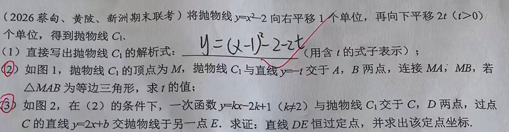
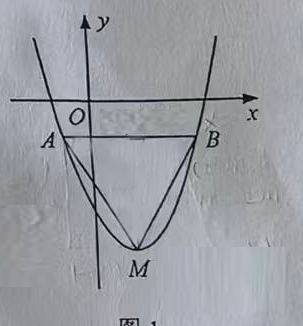
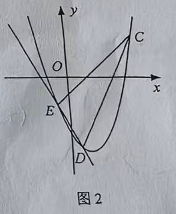
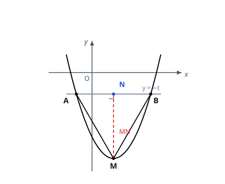

p26 抛物线平移、等边三角形与恒过定点
抛物线综合
二次函数图象平移等边三角形勾股定理恒过定点
★★★★

📷 点击查看原图
[2026 蔡甸、黄陂、新洲期末联考] 将抛物线 y=x2−2 向右平移 1 个单位，再向下平移 2t（t>0）个单位，得到抛物线 C1。
（1）直接写出抛物线 C1 的解析式（用含 t 的式子表示）；
（2）如图 1，抛物线 C1 的顶点为 M，抛物线 C1 与直线 y=−t 交于 A、B 两点，连接 MA、MB，若 △MAB 为等边三角形，求 t 的值；

（3）如图 2，在（2）的条件下，一次函数 y=kx−2k+1（k=2）与抛物线 C1 交于 C、D 两点，过点 C 的直线 y=2x+b 交抛物线于另一点 E。求证：直线 DE 恒过定点，并求出该定点坐标。

📌 知识点总结（点击展开／收起）
📌 知识点总结
| 知识点 | 说明 |
|---|
| 抛物线平移 | 左加右减（x）、上加下减（常数项）：y=(x−h)2+k 顶点 (h,k) |
| 等边三角形三线合一 | 等边三角形任一边上的中线、高线、角平分线三线合一 |
| 勾股定理 | 直角三角形中 a2+b2=c2，用于把"高"与"半边"联系起来 |
| 根与系数（比较系数法） | 若 x2+px+q=0 的两根是 m、n，则 x2+px+q=(x−m)(x−n)，展开比较系数得 m+n=−p，mn=q |
| 抛物线上两点的连线斜率 | f(x)=x2+px+q 上两点横坐标 u、v：连线斜率 =u−vf(u)−f(v)=u+v+p（平方差分解） |
| 恒过定点 | 把直线方程整理成"y=λ(x−x0)+y0"的形式，当 x=x0 时 y=y0 与 λ 无关 |
✍️ 解题过程
第（1）问：写平移后的解析式
平移口诀"左加右减（x），上加下减（整体）"：
- 向右平移 1 个单位：x 换成 x−1，得 y=(x−1)2−2；
- 再向下平移 2t 个单位：整体再减 2t。
✅（1）答案：y=(x−1)2−2−2t（顶点式，顶点为 (1, −2−2t)）
第（2）问：用等边三角形 + 勾股定理求 t
第一步：表示 A、B 与 AB 的长。联立 C1 与直线 y=−t：
(x−1)2−2−2t=−t⟹(x−1)2=2+t
因 t>0，故 2+t>0，开方得 x=1±2+t，所以
第二步：作辅助线。设 AB 的中点为 N。△MAB 是等边三角形，由三线合一，MN⊥AB 且 N 是 AB 中点。又 A、B 关于对称轴 x=1 对称，所以 N 的横坐标是 1，即 N(1, −t)，而 M(1, −2−2t)，故
第三步：勾股定理列方程。在 Rt△MNB 中，∠MNB=90∘，记 s=2+t（则 MN=s2，BN=s）。等边三角形中 MB=AB=2s，由勾股定理：
MN2+BN2=MB2⟹s4+s2=4s2
即 s4=3s2。因 s>0，两边除以 s2 得 s2=3，即
2+t=3⟹t=1
验证：t=1>0 ✓。此时 C1：y=(x−1)2−4，M(1,−4)，A(1−3,−1)，B(1+3,−1)。

📷 点击查看原图
✅（2）答案：t=1
第（3）问：证明直线 DE 恒过定点
由（2），t=1，抛物线 C1 化为一般式（便于计算）：
y=(x−1)2−4=x2−2x−3
第一步：设点，利用直线 CD 建立约束。设 C(m, m2−2m−3)，D(n, n2−2n−3)（m=n）。C、D 都在直线 y=kx−2k+1 上，联立：
x2−2x−3=kx−2k+1⟹x2−(k+2)x+(2k−4)=0
这个方程的两个根正是 m、n，所以二次三项式可以因式分解：
x2−(k+2)x+(2k−4)=(x−m)(x−n)=x2−(m+n)x+mn
比较两边系数：
m+n=k+2,mn=2k−4
由第一式 k=m+n−2，代入第二式消去 k：
mn=2(m+n)−8即(m−2)(n−2)=−4
第二步：求出点 E 的横坐标。直线 y=2x+b 过点 C(m, m2−2m−3)，代入得 b=m2−4m−3。它与抛物线的交点满足：
x2−2x−3=2x+b⟹x2−4x−(3+b)=0
把 3+b=m2−4m 代入，方程变为
x2−4x−m2+4m=0⟹(x−m)(x+m−4)=0
一根是 x=m（点 C），另一根就是点 E 的横坐标：
xE=4−m
第三步：求直线 DE 的斜率与方程。记 e=4−m。抛物线 f(x)=x2−2x−3 上两点 D(n,f(n))、E(e,f(e)) 的连线斜率用平方差分解：
kDE=e−nf(e)−f(n)=e−n(e2−n2)−2(e−n)=e+n−2=n−m+2
由点斜式，直线 DE：
y=(n−m+2)x+[f(n)−(n−m+2)n]
整理截距（f(n)=n2−2n−3）：
f(n)−(n−m+2)n=n2−2n−3−n2+mn−2n=mn−4n−3
代入第一步的约束 mn=2m+2n−8：
mn−4n−3=2m+2n−8−4n−3=2m−2n−11
于是直线 DE 的方程为
y=(n−m+2)x+2m−2n−11
第四步：凑出定点。注意到 2m−2n−11=−2(n−m+2)−7，代入上式：
y=(n−m+2)x−2(n−m+2)−7=(n−m+2)(x−2)−7
系数 n−m+2 随 k 变化，但当 x=2 时，第一项整体消失：
y=−7(与 k 无关)
所以无论 k 取何值（k=2），直线 DE 总经过点 (2, −7)。
验证（取 k=0）：直线 y=1 与抛物线交于 x=1±5，按同样方法作出的直线 DE 在 x=2 处 y=−7 ✓。
补充说明 k=2 的作用：k=2 时直线 CD（y=2x−3）与直线 CE（y=2x+b）斜率相同、互相平行，此时C、D、E 的位置关系退化，故题目排除 k=2。
✅（3）答案：直线 DE 恒过定点 (2, −7)